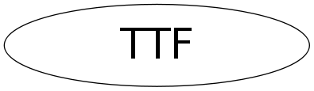

class TTF
TTF Interface to the freetype 2 library.
Function Members (Methods)
public:
| TTF() | |
| TTF(const TTF&) | |
| virtual | ~TTF() |
| static Short_t | CharToUnicode(UInt_t code) |
| static TClass* | Class() |
| static void | Cleanup() |
| static Int_t | GetAscent() |
| static const FT_BBox& | GetBox() |
| static TTGlyph* | GetGlyphs() |
| static Bool_t | GetHinting() |
| static Bool_t | GetKerning() |
| static Int_t | GetNumGlyphs() |
| static FT_Matrix* | GetRotMatrix() |
| static Bool_t | GetSmoothing() |
| static void | GetTextAdvance(UInt_t& a, char* text) |
| static void | GetTextExtent(UInt_t& w, UInt_t& h, char* text) |
| static Int_t | GetWidth() |
| static void | Init() |
| virtual TClass* | IsA() const |
| static Bool_t | IsInitialized() |
| static void | LayoutGlyphs() |
| TTF& | operator=(const TTF&) |
| static void | PrepareString(const char* string) |
| static void | SetHinting(Bool_t state) |
| static void | SetKerning(Bool_t state) |
| static void | SetRotationMatrix(Float_t angle) |
| static void | SetSmoothing(Bool_t state) |
| static void | SetTextFont(Font_t fontnumber) |
| static Int_t | SetTextFont(const char* fontname, Int_t italic = 0) |
| static void | SetTextSize(Float_t textsize) |
| virtual void | ShowMembers(TMemberInspector& insp) |
| virtual void | Streamer(TBuffer& b) |
| void | StreamerNVirtual(TBuffer& b) |
| static void | Version(Int_t& major, Int_t& minor, Int_t& patch) |
Data Members
private:
| static Int_t | fgAscent | string ascent, used to compute Y alignment |
| static FT_BBox | fgCBox | string control box |
| static void* | fgCharMap[32] | font character map |
| static Int_t | fgCurFontIdx | current font index |
| static void* | fgFace[32] | font face |
| static Int_t | fgFontCount | number of fonts loaded |
| static char* | fgFontName[32] | font name |
| static TTGlyph | fgGlyphs[1024] | glyphs |
| static Bool_t | fgHinting | use hinting (true by default) |
| static Bool_t | fgInit | true if the Init has been called |
| static Bool_t | fgKerning | use kerning (true by default) |
| static void* | fgLibrary | FreeType font library |
| static Int_t | fgNumGlyphs | number of glyphs in the string |
| static FT_Matrix* | fgRotMatrix | rotation matrix |
| static Bool_t | fgSmoothing | use anti-aliasing (true when >8 planes, false otherwise) |
| static Int_t | fgSymbItaFontIdx | Symbol italic font index |
| static Int_t | fgTBlankW | trailing blanks width |
| static Int_t | fgWidth | string width, used to compute X alignment |
Class Charts
{kind=link}
{kind=link}
{kind=link}
{kind=link}

Function documentation
void GetTextExtent(UInt_t& w, UInt_t& h, char* text)
Get width (w) and height (h) when text is horizontal.
void LayoutGlyphs()
Compute the glyps positions, fgAscent and fgWidth (needed for alignment). Perform the Glyphs transformation. Compute the string control box. If required take the "kerning" into account. SetRotation and PrepareString should have been called before.
Int_t SetTextFont(const char* fontname, Int_t italic = 0)
Set text font to specified name. font : font name italic : the fonts should be slanted. Used for symbol font. Set text font to specified name. This function returns 0 if the specified font is found, 1 if not.
void SetTextFont(Font_t fontnumber)
Set specified font. List of the currently supported fonts (screen and PostScript) Font ID X11 TTF 1 : times-medium-i-normal timesi.ttf 2 : times-bold-r-normal timesbd.ttf 3 : times-bold-i-normal timesi.ttf 4 : helvetica-medium-r-normal arial.ttf 5 : helvetica-medium-o-normal ariali.ttf 6 : helvetica-bold-r-normal arialbd.ttf 7 : helvetica-bold-o-normal arialbi.ttf 8 : courier-medium-r-normal cour.ttf 9 : courier-medium-o-normal couri.ttf 10 : courier-bold-r-normal courbd.ttf 11 : courier-bold-o-normal courbi.ttf 12 : symbol-medium-r-normal symbol.ttf 13 : times-medium-r-normal times.ttf 14 : wingding.ttf 15 : symbol oblique is emulated from symbol.ttf
FT_Matrix * GetRotMatrix()
const FT_BBox & GetBox()
TTGlyph * GetGlyphs()